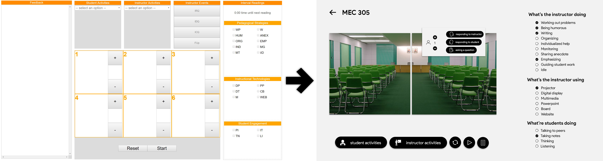
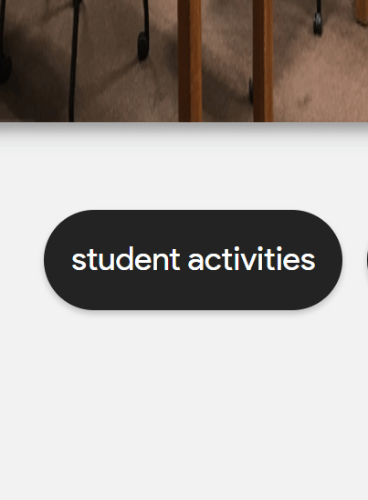
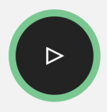
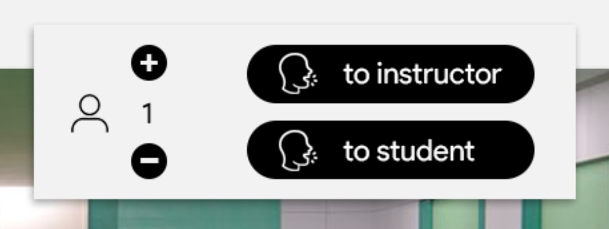
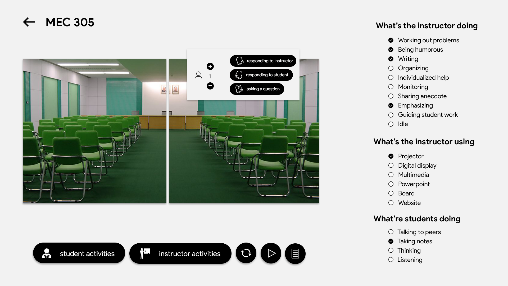

Redesigning a Classroom Observation Portal
Redesigning a user interface is a daunting task. You have to consider your users, the current interface's many functions, and the end goal of your redesign as well as the original goal of the project you are redesigning. Often times more than just a facelift, such projects require understanding of interaction design. My first step is usually writing down each necessary element of the original design (page title, each checkbox element, submit/reset buttons, etc) and then clear my head of the design, and try and logically develop a new one, from the perspective of a user trying to complete each task possible with the current design. Here is how I proceeded.

From the start, you notice a few things. First, there's a lot of archaic acronyms! This is generally ok if you're audience is specially trained to be able to understand the acronyms and use the software. However, it arguably lessens cognitive load on the user when they don't have to recall acronyms which is why I opted to use natural language instead of acronyms. Second, there's lot's of unused space. You notice the feedback section, whose purpose is to report all user input so the user can verify their actions are being submitted. A better solution was to relegate the entire section to a feed modal button, and instead provide realtime subtle notifications whenever an action is performed (shown below, excuse the lack of padding in the design).
Currently the design employed an orange color across the page (not necessarily a theme, as there is no palette of primary and secondary colors). This was not necessary and did not do much for the stylistic aspect of the page. Instead, going with a monochromatic theme and opting to use color to emphasize elements of the UI was preferred. Such as a pulsing "start" button, where the color and animation both serve to draw attention to the initial action that must be performed on the page to proceed with anything (shown below).
The use of iconography is always appreciated. Generally a rule is that an icon should be able to completely replace the text that describes it, and understood in less time than it would take to read the text. However, icons can also be used as supplements, as seen here. Here, they are used to complete the sentences of the buttons they are embedded within. Also seen is an icon for a person, indicating the counter to the right of it is for the person count. A bit more elegant than "# of Students:".
A lot goes into making an aesthetically appealing website. Drop shadows consistent in angle to emulate a stationary light source, depth to simulate spatial hierarchy, typography with varying weights and sizes to emphasize that hierarchy, iconography to ease understanding, and animations and colors to direct attention and bring liveliness to the page. It's a science that I am continously trying to understand, and a craft I am constantly working at. This is yet another attempt at understanding and working that science and craft, with much more to come.
You can find all the code for this classroom portal on my Github